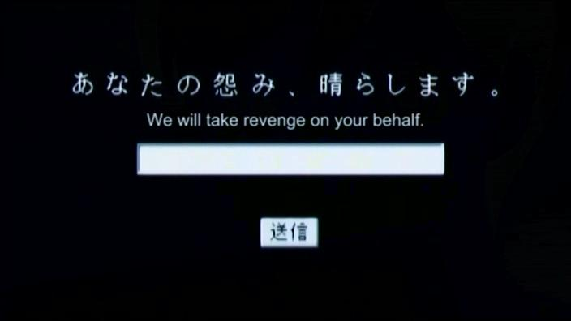

Hell Girl
Home
Characters
Episode List

Episode List
Season 4
Can't Be Seen, Can't Be Heard
There's Only You
Someday, Somebody Will
Bury Me Deep
I Can Hear the Song of the Wind
Twill
The Tarnished Mound
Early Afternoon Window
Spilled Bits
Black Rut
A Bird in a Cage
Stray Inari
Watch them all here!